Due to NDA with the client company, high fidelity mockups and implementations cannot be displayed.
About Project.
This project was a sub-product of a larger digital transportation suite built by the company for large corporate clients. The company I worked for is a leading name in digitised transportation solutions and its main product is a platform that connects shippers with customers in a way similar to Uber. The DTS is designed for high-profile clients requiring customised solutions and modules for managing their operations. The time duration for the project was 2 months .
My Role
I worked as a UX Designer/Product Manager for the DTS Product Division. I designed the features of the dashboard based on the existing DTS product after conducting thorough research. The design went through 4-5 iterations during the course of my 2 month internship at the company, culminating in a Product Roadmap and Specs Document for development at a later stage.
Research
User Interviews
Stakeholders interviewed on the client side include National Transport Manager, Regional Transport Manager, Warehouse Manager.
Ones interviewed on the company side include Business Developers, Sales Heads, Program Managers and Data Entry Staff.
Industry Research
Thorough research was conducted to understand the logistics industry and different aspects of the business. This involved looking into the problems with the current way the sector works and how the DTS aimed to reduce inefficiencies in the system.
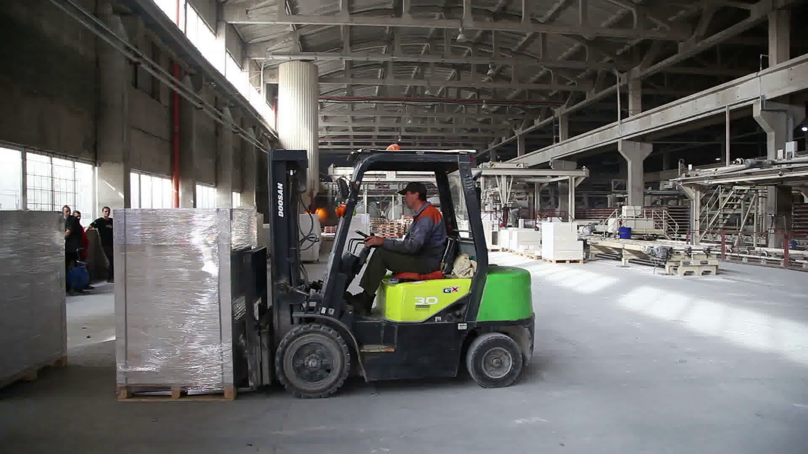
Field Study
A number of factory visits were organised by the company in the nearby areas such that I could gain a first-hand experience of how processes work on the field and what would be the essential components that need support of software.
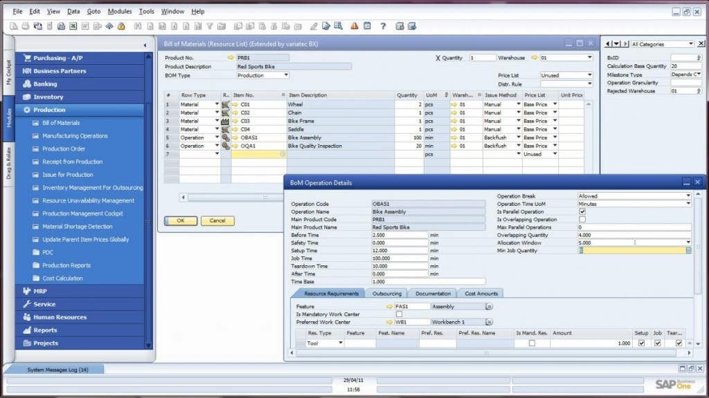
Product Review
To design a solution that matches the technological familiarity of the client, a review of the products used by them was undertaken. This included a host of business software such as ERP systems and Inventory Management Systems.
Analysis 1
Transportation Process
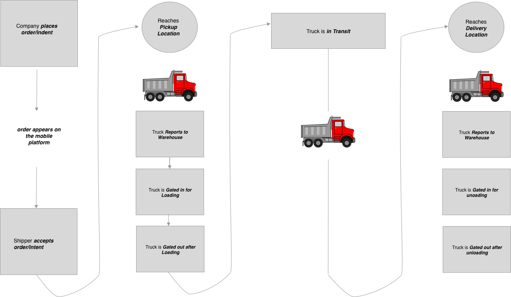Digital Transportation Suite
Indent Management System (IMS)
This system is used to automate the placing of orders through distribution rules which specify which transporter wil be chosen for which delivery location and route.
Placement Index (PI) - This shows the percentage of orders accepted by transporters from the total orders placed.
Yard Management System (YMS)
This system is used to monitor the status of the trucks inside the pickup warehouse.
Reporting Time - This is the time elapsed between order acceptance and the truck showing up at the warehouse location for pickup.
GateIn Time - This is the time elapsed between the truck reporting at the warehouse gate and truck actually entering the warehouse premises.
GateOut Time - This is the time elapsed between the truck entering the warehouse premises and truck exiting the warehouse premises.
Turnaround Time - This is the time elapsed between the truck reporting and truck gateout (total loading time).
Vehicle Tracking System (VTS)
This system is used to track the location of the truck when it is en-route to the delivery location.
Estimated Time of Arrival (ETA) - This shows the approximate time of arrival to the delivery location as per the truck's current location and route estimates.
Route Deviation - This shows the percentage deviation of a particular truck from its prescribed route to delivery location.
Delivery Management System (YMS)
This system is used to monitor the status of the trucks inside the delivery warehouse.
The Key Performance Indicators (KPI's) for the delivery system are same as the Yard Management System.
Observations
After looking at usage data from the existing product suite, the following was found
1. Live feed is the most viewed feature as the manufacturer is mostly concerned with the daily status of his orders and trucks.
2. Reports is the second most frequently viewed page as it provides the manufacturer with metrics to assess the health of the system.
3. Filters in the reports are frequently used to understand how a specific warerhouse or transporter is performing.
Iteration 1

This iteration was designed to provide-
Overview of the system's health.
Identification of bottlenecks.
Micro and macro level analysis of the system.
The Panels display information for each of the systems, and the filter on the right can be used to select a specific warehouse or transporter. The filter changes will be reflected acroos all the panels providing a powerful perspective into the overall operations.
Components
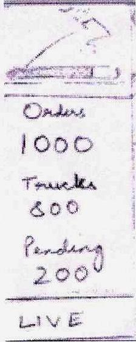
The current TMS system requires an extra button click to view the live feed which is a hindrance to a seamless user flow. In this design the sidebar is a static pageview and will be present on all pages. The pending number is a key metric for the user to understand exactly how many of his orders are still left for dispatch.
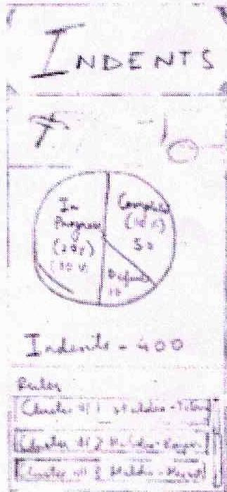
The pie chart gives a visual representation that helps the user instantly grasp the status of his indents and probe deeper. THe distribution rules governing a particular selection are also shown for better analysis and the user can manipulate it using the right filter.
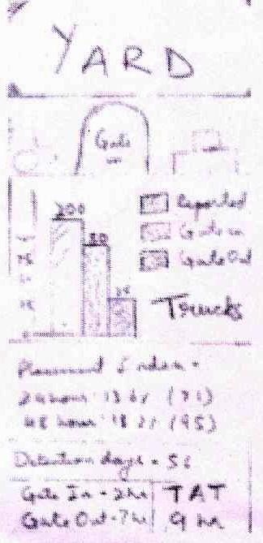
The Bar chart provides a comparative visual for customer to see the trucks reported/ gated in and gated out. It displays average values for important KPIs which can be compared to specific values by manipulating the filters.

The trucks "In Transit" are divided into On time, Delayed and Need Attention, clicking on them would take the user to the VTS for further tracking. Average ETA and Max Deviation are good abstractions for user to understand the amount of lag in his operations
Feedback
Too much information in just one page.
Matches the transportation process but doesn't match the user's mental model of the process.
Usage differs by user role, more research needed on role specific usage.
Bottlenecks need to be emphasised and highlighted for a superior product.
Needs to provide action mechanisms along with insights.
Analysis 2
User Types and Personna
Warehouse Manager

Central Transportation Head
Logistics Head

Mockups
The dashboard has been designed to cater to the different needs of the three different user types giving them a high amount of personalisation and control.
The features of the dashboard helps the user -
● Monitor operations at two levels - Warehouse Level & Pan India Level
● Provide actionable insights to the user
● Highlight exceptions and deviations in the operations
● Direct the user to act on the exceptions
● Assess performance of transport partners
● Translate ground insights on exceptions to the overall dispatch planning
Common Page Elements
Lists
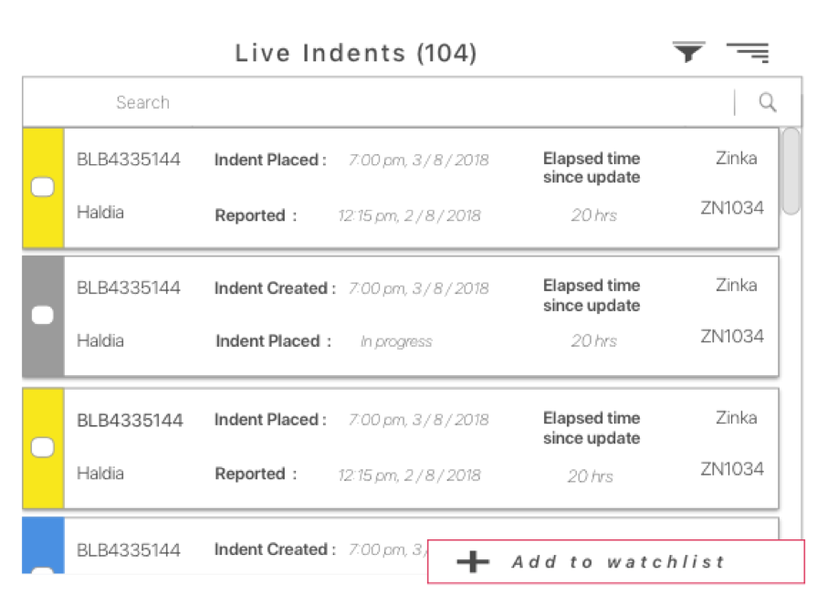Lists are a collection of entries depending on the context. It has static elements like Indent no. (top left), Source location (bottom left), transporter name (top right), materal code (bottom right) for quick identification.
It has dynamic containers which show the date and time of the last two steps that the indent has gone through, this helps the user understand how his operations are panning out over a given time frame . Along with that it shows the time elapsed since the last step such that the user can know how long the indent has been stuck at a particular step.
CardView


The card element contains all the details pertaining a particular indent/shipment. It can be understood as a card with two sides which can be flipped through the toggle buttons below. One side shows the order information, while the other side shows truck information along with its last updated location.
The View Indents Rule action button redirects the user to the indent management system to see the cluster rule governing the specific indent. The GPS view action button redirects the user to VTS where he/she can track the truck in realtime. The view documents action button shows the user the documents associated with the truck.
Hybrid List View
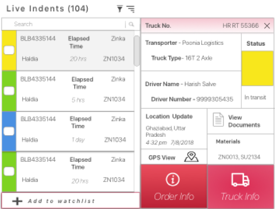On clicking a list entry(highlighted in grey), a hybrid list view is shown with the card element on the right side. In this view, the dynamic list entry element disappears with only “Time Elapsed” left and static elements are shown. The indent card for the selected entry is shown, giving the user a complete picture of the particular indent. On clicking the X button, the hybrid view closes and the list returns to the earlier list view.
Color Index

Each part of the truck process has been divided based on colors such that the user can look at the indent and quickly understand which stage the indent is at. The index button opens the above popup with the color codes along with phone numbers of transporters and warehouses for quick lookups and actions.
Warehouse Manager Dashboard
This view is specifically designed for warehouse manager to track shipments going into and outside his warehouse in realtime. It has been divided into outbound and inbound to reflect the Warehouse manager’s immediate concerns and mental model in dealing with logistics at his warehouse.
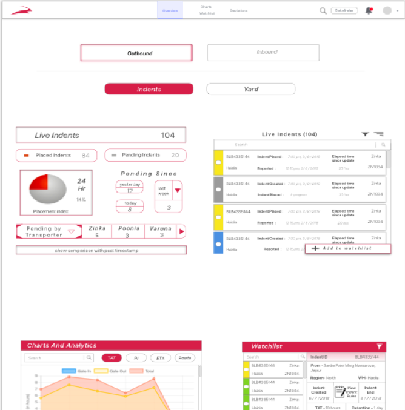
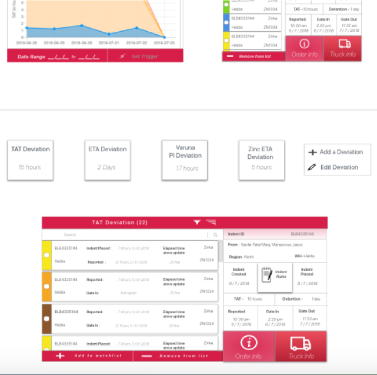
Navigation
The Dashboard header consists of the 4 common elements (Nav button, Login button, Search Bar, Index), along with a navigation bar. The navigation bar redirects the user to the three distinct features/views in the Dashboard.
Overview


The outbound tab refers to all the shipments going out of the warehouse, and it has two subtabs-indents and yard. While the Inbound refers to all shipments coming into the warehouse from various locations, and there are two subtabs to it- transit and delivery.
All subtabs in the Overview feature have two components-the Dynamic Panel and a corresponding list view. Any selections in the dynamic panel would be shown in the list view with list entries pertaining to the selected property.
Indents Tab
The dynamic panel has been designed to provide relevant information to the Warehouse manager for actionable insights. A top priority for the warehouse manager is to understand how many orders he/she has for the day and how many are pending. Thus the panel consists of elements like Pending Since and Pending By.
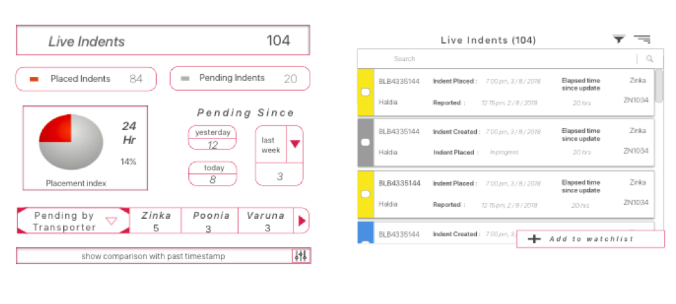
Here we can see the dynamic panel on the right and the corresponding list view on the left. This is a realtime view and shows the immediate state of the warehouse operations. On clicking a list entry, a hybrid list view(refer Page elements) is shown with card details such that the user can take actions based on the information provided.


The Show Comparison is a special feature as it allows the warehouse manager to compare his operations with a past timestamp. On clicking the “Show comparison” tab, a popup to select the timestamp shows up. The user can select a custom date and time or use the option in the frequents to see operations a day, a week or a month ago. After the user clicks on set comparison date, the indent panel transforms into a comparison panel as follows.
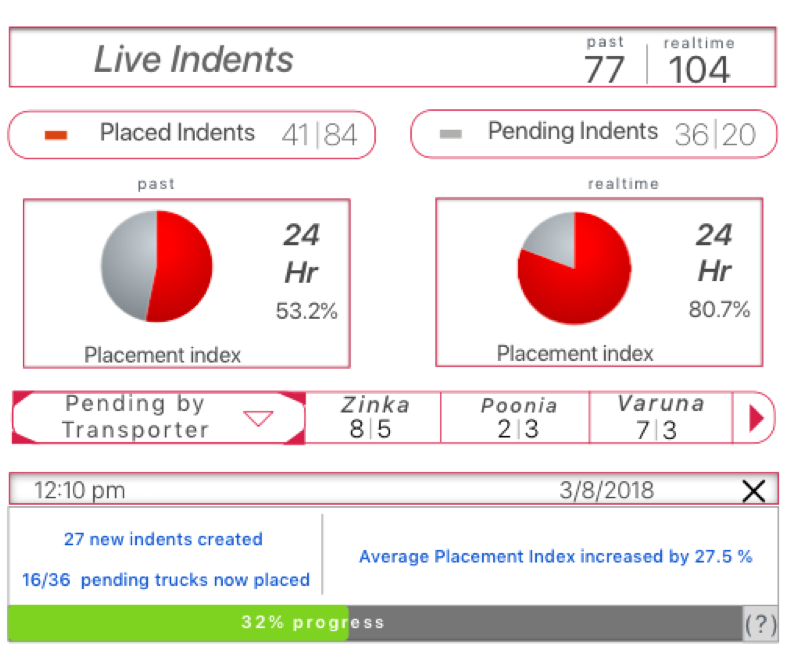
The value for the past timestamp is shown on the left and the realtime value is shown on the right. This allows the warehouse manager to understand how his operations have fared in a given time period. This can be an hour before, 2 hours before or any other suitable time frame. The comparison bar button now displays the comparison time and date along with a cross which when clicked exits the comparison mode and returns to the original panel state.
Below the comparison bar are the following components-
Update Window- The update window is divided into two sides, left for reflecting change in the operational numbers while the right for showing change in statistical values. The warehouse manager can understand exactly how many new indents have been added, and how many previously pending indents have now been placed. While the user can understand this by subtracting values shown in the panel, a dedicated update window gives him the required information straightaway and makes the entire panel coherent.
Percentage Progress- This shows the progress of operations in comparison to the previous date and time and the parameters can be updated by clicking the question mark.
Yards Tab
The Panel has been designed to provide the warehouse manager with actual numbers and time frames for the trucks present in the yard. The emphasis is on helping the user understand which indents are deviating from the average values.

It consists of a YMS bar chart which provides the user a visual sense of how his operations are panning out by simply looking at the height of the bars in the chart. It also consists special metrics such as Gate In/GateOut Pending which shows all the trucks that have been Reported/Gated In but whose Gate In/Gate Out is pending. A possible user flow could be the user clicking this element and then arranging by time elapsed to understand which trucks have been delayed the most.
Transit Tab
The Panel has been designed in a way that the user understands where deviations and delays are occurring, and allows him to quickly act on it. It has special metrics like Route Deviation which help analyse trends in deviations that are occuring or might occur in the future.
The dynamic sections of the list entries are different from all the subtabs in the system. It does not show the last two steps but shows the expected arrival time and date along with the current location. This helps the warehouse manager quickly identify where the truck is and when it will reach the yard. The time elapsed is replaced by ETA deviation so that the user knows how delayed the truck is from its original time. Note-The arrival time is displayed after adding in the ETA Deviation so that the user has realistic information of truck arrival.
Watchlist


This feature has been designed to provide a high degree of personalisation to the warehouse manager. For certain specific cases or indents, the user can add any list entry to the watchlist to track it seperately. The list entries can be added to the watchlist from any of the views including the Search bar, by selecting the element and clicking on the Add to Watchlist button below the list. After clicking the button, the popup shows up.

Since the watchlist addition can be from any list, the user can add a tag to remember why he/she put it in the watchlist. This tag can be used to identify the indent individually or a group of indents in the watchlist with the same tag.
Deviation Lists
This view helps the warehouse manager to set trigger values such that any deviations can be recorded in a deviation list for quick access.
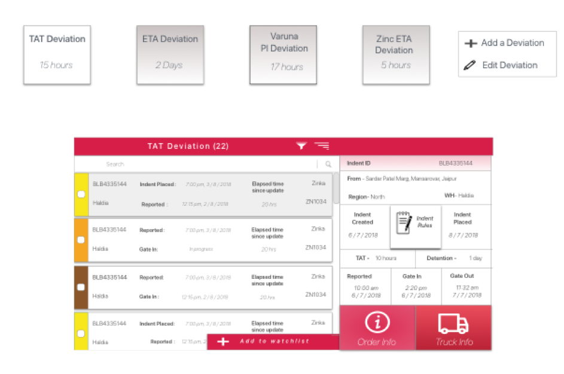Lists can be created using any of the KPIs and can be personalised by specific transporters, warehouses or materials.
Central Transport Head Dashboard
This mode provides a pan-India view of the operations and comparative insights into warehouse performance (can access warehouse manager view)
Navigation
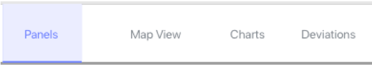Live Panels
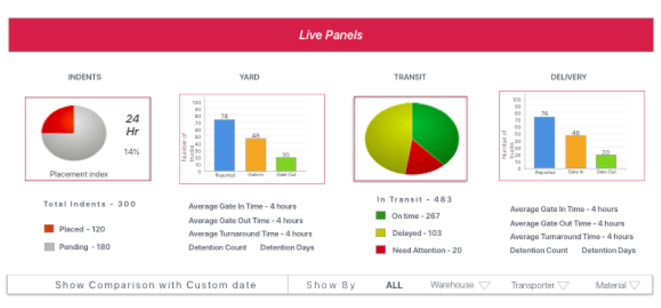This is the first feature that the user gets to see when he opens the application. It shows overall statistics across all operations and systems in one consolidated view. While the default view shows all operations, the user can use the Show by Filters on the left to see specific warehouse, transporter or materials. The idea behind the panels is to provide realtime information to the user about his operations, he may check the status of the live panel every hour, or every 2 hours and notice the changes in the numbers of his operations. To make the changes in the operations even more visible, there is a show Comparison with custom date option at the bottom.
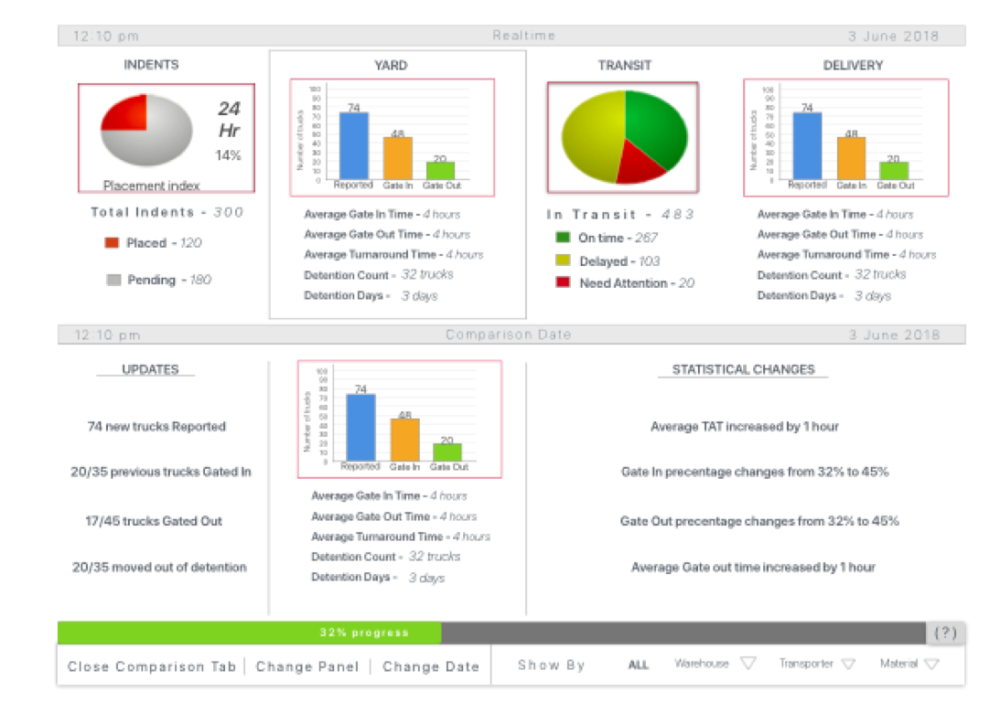Map View
This view has been designed for comparative analysis of the warehouse operations such that the Transport manager can see geographical trends and also pinpoint a problem.

It consists of two components, the actual map view and a control panel on the right to manipulate this map view. Each Warehouse is displayed as a grey square with a number indicating the selected property from the control panel on the left. The Warehouses are referred to by their code and the warehouse manager can find the code for any warehouse in the index placed at the bottom left of the map.
The possible use cases for this feature are quite vast, here is an excerpt from the original Product Requirements Document -


CTM Deviation List
The deviation list is similar to the WHM view with key difference that the user can track a group of warehouses and use warehouses as a parameter to create these lists.
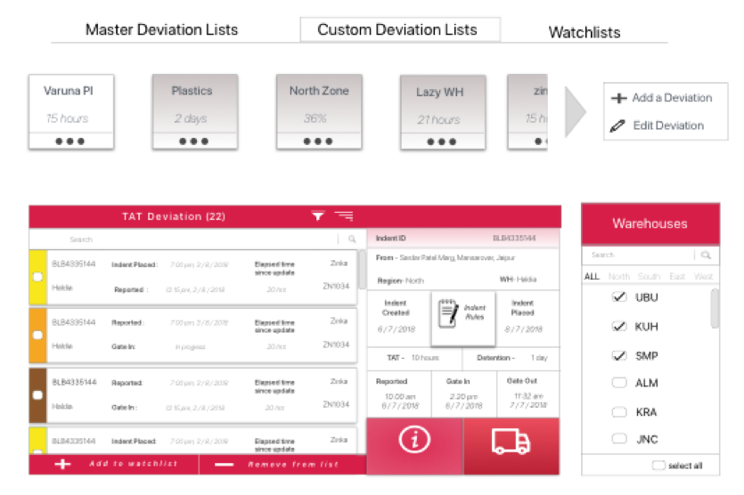SCM/Logistics Head Dashboard
The Supply Chain Manager Dashboard shares the exact same features as the CTM Dashboard however has an additional feature in place of Deviation Lists called Rulewise View.

This feature has been designed to provide the user a holistic view of how his indent rules are performing. It shows the efficiency of each cluster's operations, along with a segmented view of the performance of the transporters in the clusters. Each Cluster item is a widget which can be manipulated and toggled independently to provide relevant information about the cluster’s performance. The user can browse the clusters by going down in this list or simply search for a cluster in the search bar above
In the middle the user finds information in terms of measurement metrics showing average and extreme values. This gives the user a good comparison to understand how far away from the average a particular deviation would be. The button on the extreme right “Edit in IMS” gives the user to option to directly jump into the IMS and modify the rules for the specific cluster. This CTA button is primal in allowing the user to analyse the cluster and then make changes based on it.

In the expanded view, details for each transporter can be seen for the user to get an in-depth understanding of the transporter’s performance. This provides a retrospective view of the operations for future planning of operations and trends analysis.(can access all views)